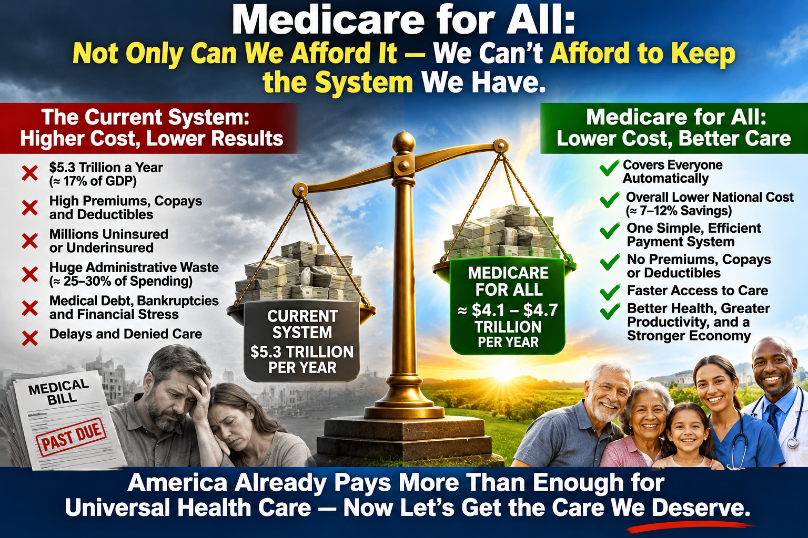

HOSPITAL FINANCING
Medicare for All: How Would Hospital Billing Actually Work?
Replacing complex insurance billing with a simpler way to finance hospital care

Imagine a hospital that concentrates on healing instead of billing
Today, when a patient enters an American hospital, two complicated processes begin. One is medical: doctors, nurses, and other professionals diagnose and treat illness. The other is financial: the hospital checks insurance, determines payment rules, documents services, submits claims, and sometimes disputes denials.
Medicare for All offers an opportunity to simplify that second process. The objective is not to stop paying hospitals. It is to pay them reliably and efficiently while protecting patients from bills for covered care.
How hospital billing works today
Consider a patient admitted for pneumonia. The hospital verifies insurance coverage, determines network status, documents treatments, and submits claims under an insurer’s rules. The insurer may reduce or deny a claim, leading to appeals, revised documentation, and bills for deductibles or other patient charges.
A hospital stay may produce separate bills from a facility, physicians, and other providers. Hospitals employ billing, coding, insurance verification, collections, and appeals teams because the financing system is fragmented. These workers perform necessary jobs today, but many of the tasks could be reduced under a unified system.
Two possible approaches under Medicare for All
A national claims-based payment system: Hospitals could submit standardized claims to one public payer rather than negotiating separate rules with many insurers. The program would pay established rates for covered services. Patients would not receive bills for covered hospital care if the enacted program eliminates cost sharing.
Hospital global budgets: Alternatively, a hospital could receive an approved annual operating budget based on the community it serves, expected patient needs, staffing, and operating costs. Instead of billing separately for every service, the hospital would finance covered operations from that budget. Major construction and equipment investments could be reviewed and funded separately.
These approaches are not identical, and a law could combine elements of both. A unified payer does not automatically eliminate all coding, reporting, or financial oversight.
What would happen when a patient is admitted?
Imagine Mary arrives at an emergency department with severe abdominal pain. Doctors determine that she needs surgery. Under a comprehensive Medicare for All program, her treatment would be based on medical need rather than whether a particular insurer has a contract with the hospital.
The hospital would still verify identity when appropriate, maintain records, and document care. Under a claims model it would request payment from the public payer. Under a global budget model, the hospital’s operating budget would fund the care. If the program covers the treatment without patient cost sharing, Mary would not receive a separate hospital bill.
Would hospitals still need administrative staff?
Yes. Hospitals would still need medical records, payroll, procurement, accounting, quality reporting, patient coordination, and fraud prevention. But fewer resources might be needed for insurer-specific contracts, eligibility disputes, prior authorization paperwork, collections, and appeals.
Any transition should include retraining and employment assistance for workers whose current jobs depend on the existing billing system.
How would doctors, nurses, and hospitals get paid?
Nurses and other hospital employees would continue receiving wages and benefits. Hospitals would still purchase medications, supplies, equipment, and utilities. Physicians might be paid as hospital employees or through separate arrangements defined by the law.
The central change would be the financing pathway: fewer competing insurance payment systems and more uniform public rules.
Would hospitals have enough money?
That depends on the program’s design. Payment rates and budgets must account for staffing, inflation, patient complexity, emergency readiness, and the needs of rural and safety-net hospitals. Inadequate funding could undermine access even if insurance coverage were universal.
Transparent budgets, appropriate adjustments for changing patient needs, quality monitoring, and separate capital funding would be important safeguards.
Would Medicare for All save money?
It could reduce administrative overhead and some prices, but the size of any savings is uncertain. More people would receive needed care, which also has a cost. Overall results depend on reimbursement rates, drug prices, covered benefits, demand, and implementation.
A serious comparison must count total national healthcare spending—not just the federal budget—and compare it with what households, employers, and governments pay today.
Patients before paperwork
A hospital should devote its energy to healing patients, not fighting a separate financial battle after every medical one. A carefully designed Medicare for All program could make hospital financing simpler, more predictable, and less burdensome for patients.
The goal is not free hospital operation. It is a more efficient and accountable way to pay for necessary care while ensuring that everyone can receive it.
Important qualification
This article describes possible approaches to Medicare for All, not an existing nationwide U.S. hospital payment system. The exact rules for global budgets, claims, physician payment, eligibility, and cost sharing would depend on the legislation enacted.
Further reading
Centers for Medicare & Medicaid Services, National Health Expenditure Data: https://www.cms.gov/data-research/statistics-trends-and-reports/national-health-expenditure-data
Congressional Budget Office, How CBO Analyzes Proposals for a Single-Payer Health Care System: https://www.cbo.gov/publication/56811
Congressional Medicare for All proposals: review the relevant bill text for hospital global-budget and payment provisions.